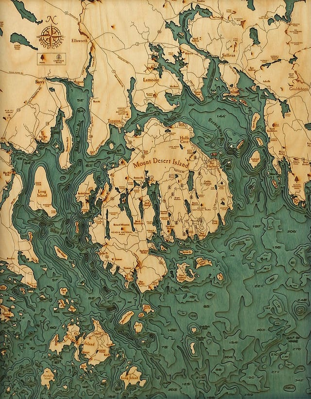

Вообще, все этюды очень клевые!
Underwater topography

OakOak

Клевые картинки!
Recomposed by Max Richter: Vivaldi - The Four Seasons (2012)

Очень интересная интерпретация!
Have Dreams, Will Travel (2007)

Хорошее кино! Лучше смотреть на английском.
Bookworm

Клевая какая штука!
Джаз

Многосерийный документальный фильм о джазе, который можно посмотреть онлайн.
Про футбол, а, на самом деле, про другое
Я никак не могу перестать удивляться тому, что люди смотрят наш отечетственный футбол и получают от этого удовольствие, болеют за команды и сборную, которые ничего из себя не представляют, и раз за разом доказывают, что победа над одной из действительно серьезных европейских команд (или выход из группы) — это всего лишь случайность, но никак не тенденция.
Я не перестаю удивляться этому чуваку в шляпе, который с таким упорством ходит на каждый матч, но не имеет достаточной силы воли признать очевидную вещь: хорошего, действительно качественного футбола (да и не только) в этой стране не будет до тех пор, пока распил бюджета и коррупция приносят нашим чиновникам больше удовольствия, чем такая банальная, но гораздо более ценная, хотя и не измеримая в миллионах и миллиардах рублей вещь, как чувство гордости за свою страну и людей.
Пару зарисовок, чтобы не быть голословным:
Один мой коллега, сын которого занимается хоккеем, встает с ним вместе в 6 утра, чтобы попасть на дешевый лед! В 6 утра! И вот он переезжает в Штаты, и рассказывает, что там в городе Бостоне (который соизмерим по количеству жителей с Петербургом), несколько десятков ледовых арен. Несколько десятков! А у нас их сколько? Пять? И это в Питере! Сколько потенциально способных ребят не имеют возможности попасть на лед и стать, может, следующими Малкиными или Буре?
Или, например, для того, чтобы отдать ребенка в государственный бассейн, в нашем Кировском районе, люди стоят сутками в очереди, которую сами и организовывают. Ну и ладно, мы тут можем постоять, а что делать людям, которые живут в 50 километрах от Питера? А в 500?
Посмотрите, когда в следующий раз будете лететь над европой, в иллюминатор и попробуйте сосчитать сколько футбольных полей вы видите и где они расположены. Это тоже очень хорошо иллюстрирует положение вещей, особенно с учетом 43 миллиардной стройки Зенит-Арены), на которой ваш ребенок вряд ли когда-нибудь сможет заниматься.
Но вот в чем загвоздка. Все эти люди готовы стоять в очередях, вставать в 6 утра, ходить на уровня европейской деревни футбол, но не могут найти ни сил, ни желания взглянуть шире и понять, в чем же, на самом деле, причина. Встать и выйти на улицу. Пройти мирным шествием и устроить митинг. Попробовать изменить что-то. Просто попробовать. Грустно.
Sylvain Chauveau - Singular Forms (Sometimes Repeated)
Совсем минималистичный альбом с неожиданным и приятным вокалом :)
Kalimba
Здорово!